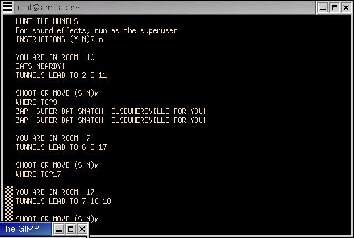

File : wumpus.sp

#!/usr/local/bin/spar
-- HUNT THE WUMPUS
pragma annotate( summary, "wumpus" );
pragma annotate( description, "Hunt the Wumpus" );
pragma annotate( description, "Originally for the PDP-8." );
pragma annotate( description, "The Timeless cave-crawling classic based on GW-BASIC source" );
pragma annotate( description, "www.ifarchive.org. Modified for SparForte by Ken O. Burtch." );
pragma annotate( description, "For sound effects, run as superuser" );
pragma annotate( category, "games" );
pragma annotate( author, "Ken O. Burtch" );
pragma license( unrestricted );
pragma ada_95; -- strict programming practices
pragma software_model( nonstandard );
pragma restriction( no_external_commands ); -- O/S independent
procedure wumpus is
type player_status is ( alive, won, lost );
status : player_status := alive; -- playing, winner, loser (was "f")
t_delim : constant character := ",";
tunnels : array(1..20) of string; -- adjacent room list
arrows : integer; -- number of arrows (was "a")
i : string; -- user input
player_room : positive; -- player room (was "l")
k : natural;
arrow_path : array(1..5) of positive; -- list of rooms for arrow (was "p")
type room_contents is ( player, wumpus, pit1, pit2, bats1, bats2 );
type room_list is array( player..bats2 ) of positive;
room : room_list; -- room contents (was "l()")
original_room : room_list; -- initial contents (was "m()")
good : boolean; -- for searches
soundfx : boolean := false;
begin
put_line( "HUNT THE WUMPUS" );
put( "SOUND EFFECTS (Y-N)? " );
i := get_line;
if i = "Y" or i = "y" then
soundfx := true;
end if;
put( "INSTRUCTIONS (Y-N)? " );
i := get_line;
if i = "Y" or i = "y" then
put_line( "WELCOME TO 'HUNT THE WUMPUS'" );
put_line( " THE WUMPUS LIVES IN A CAVE OF 20 ROOMS. EACH ROOM" );
put_line( "HAS 3 TUNNELS LEADING TO OTHER ROOMS. (LOOK AT A" );
put_line( "DODECAHEDRON TO SEE HOW THIS WORKS-IF YOU DON'T KNOW" );
put_line( "WHAT A DODECAHEDRON IS, ASK SOMEONE)" );
new_line;
put_line( " HAZARDS:" );
put_line( " BOTTOMLESS PITS - TWO ROOMS HAVE BOTTOMLESS PITS IN THEM" );
put_line( " IF YOU GO THERE, YOU FALL INTO THE PIT (& LOSE!)" );
put_line( " SUPER BATS - TWO OTHER ROOMS HAVE SUPER BATS. IF YOU" );
put_line( " GO THERE, A BAT GRABS YOU AND TAKES YOU TO SOME OTHER" );
put_line( " ROOM AT RANDOM. (WHICH MAY BE TROUBLESOME)" );
new_line;
put_line( " WUMPUS:" );
put_line( " THE WUMPUS IS NOT BOTHERED BY HAZARDS (HE HAS SUCKER" );
put_line( " FEET AND IS TOO BIG FOR A BAT TO LIFT). USUALLY" );
put_line( " HE IS ASLEEP. TWO THINGS WAKE HIM UP: YOU SHOOTING AN" );
put_line( " ARROW OR YOU ENTERING HIS ROOM." );
put_line( " IF THE WUMPUS WAKES HE MOVES (P=.75) ONE ROOM" );
put_line( " OR STAYS STILL (P=.25). AFTER THAT, IF HE IS WHERE YOU" );
put_line( " ARE, HE EATS YOU UP AND YOU LOSE!" );
new_line;
put_line( "HIT RETURN TO CONTINUE" );
i := get_line;
put_line( " YOU:" );
put_line( " EACH TURN YOU MAY MOVE OR SHOOT A CROOKED ARROW" );
put_line( " MOVING: YOU CAN MOVE ONE ROOM (THRU ONE TUNNEL)" );
put_line( " ARROWS: YOU HAVE 5 ARROWS. YOU LOSE WHEN YOU RUN OUT" );
put_line( " EACH ARROW CAN GO FROM 1 TO 5 ROOMS. YOU AIM BY TELLING" );
put_line( " THE COMPUTER THE ROOM#S YOU WANT THE ARROW TO GO TO." );
put_line( " IF THE ARROW CAN'T GO THAT WAY (IF NO TUNNEL) IT MOVES" );
put_line( " AT RANDOM TO THE NEXT ROOM." );
put_line( " IF THE ARROW HITS THE WUMPUS, YOU WIN." );
put_line( " IF THE ARROW HITS YOU, YOU LOSE." );
put_line( "HIT RETURN TO CONTINUE" );
i := get_line;
put_line( " WARNINGS:" );
put_line( " WHEN YOU ARE ONE ROOM AWAY FROM A WUMPUS OR HAZARD," );
put_line( " THE COMPUTER SAYS:" );
put_line( " WUMPUS: 'I SMELL A WUMPUS'" );
put_line( " BAT : 'BATS NEARBY'" );
put_line( " PIT : 'I FEEL A DRAFT'" );
end if;
-- *** SET UP CAVE (DODECAHEDRAL NODE LIST) ***
-- dim tunnels(20,3) but SparForte has no true 2-d arrays. So we'll fake-it using
-- 1-D arrays and text fields
tunnels(1) := "2,5,8";
tunnels(2) := "1,3,10";
tunnels(3) := "2,4,12";
tunnels(4) := "3,5,14";
tunnels(5) := "1,4,6";
tunnels(6) := "5,7,15";
tunnels(7) := "6,8,17";
tunnels(8) := "1,7,9";
tunnels(9) := "8,10,18";
tunnels(10) := "2,9,11";
tunnels(11) := "10,12,19";
tunnels(12) := "3,11,13";
tunnels(13) := "12,14,20";
tunnels(14) := "4,13,15";
tunnels(15) := "6,14,16";
tunnels(16) := "15,17,20";
tunnels(17) := "7,16,18";
tunnels(18) := "9,17,19";
tunnels(19) := "11,18,20";
tunnels(20) := "13,16,19";
-- *** LOCATE L ARRAY ITEMS ***
-- *** 1-YOU, 2-WUMPUS, 3&4-PITS, 5&6-BATS ***
loop
good := true;
for j in player..bats2 loop
room(j) := numerics.rnd(20);
original_room(j) := room(j);
end loop;
-- *** CHECK FOR CROSSOVERS (IE la(1)=la(2), ETC) ***
for j in player..bats2 loop
for k in player..bats2 loop
if j /= k then
if room(j) = room(k) then
good := false;
end if;
end if;
end loop;
end loop;
exit when good;
end loop;
-- *** SET NO. OF ARROWS ***
arrows := 5;
player_room := room(player);
-- *** RUN THE GAME ***
-- *** PRINT LOCATION & HAZARD WARNINGS ***
loop
new_line;
put_line( "YOU ARE IN ROOM " & strings.image( room(player) ) );
good := false; -- don't play bats twice
for j in wumpus..bats2 loop
for k in 1..3 loop
if numerics.value( strings.field( tunnels(room(player)), k, t_delim ) ) = room(j) then
case j is
when wumpus => put_line( "I SMELL A WUMPUS!" );
when pit1 => put_line( "I FEEL A DRAFT" );
when pit2 => put_line( "I FEEL A DRAFT" );
when bats1 => put_line( "BATS NEARBY!" );
if not good and soundfx then
sound.play( "./bats.wav" );
good := true;
end if;
when bats2 => put_line( "BATS NEARBY!" );
if not good and soundfx then
sound.play( "./bats.wav" );
good := true;
end if;
when others => put_line( "<<unexpected case j value>>" );
end case;
end if;
end loop;
end loop;
put_line( "TUNNELS LEAD TO " &
strings.field( tunnels(player_room), 1, t_delim) & " " &
strings.field( tunnels(player_room), 2, t_delim) & " " &
strings.field( tunnels(player_room), 3, t_delim) );
new_line;
-- Main Loop
-- *** MOVE OR SHOOT ***
loop
put( "SHOOT OR MOVE (S-M)" );
i := get_line;
if i = "S" or i = "s" then
i := "1";
exit;
elsif i = "M" or i = "m" then
i := "2";
exit;
end if;
end loop;
if i = "1" then
-- *** ARROW ROUTINE ***
declare
arrow_path_length : integer; -- was "j9"
begin
-- *** PATH OF ARROW ***
status := alive;
loop
put( "NO. OF ROOMS (1-5)" );
arrow_path_length := numerics.value( get_line );
exit when arrow_path_length >= 1 and arrow_path_length <= 5;
end loop;
for k in 1..arrow_path_length loop
loop
put( "ROOM #" );
arrow_path(k) := numerics.value( get_line );
exit when k <= 2;
exit when arrow_path(k) /= arrow_path(k-2);
put_line( "ARROWS AREN'T THAT CROOKED - TRY ANOTHER ROOM" );
end loop;
end loop;
-- *** SHOOT ARROW ***
good := false;
player_room := room(player);
for k in 1..arrow_path_length loop
for k1 in 1..3 loop
if numerics.value( strings.field( tunnels(player_room), k1, t_delim)) = arrow_path(k) then
good := true;
player_room := arrow_path(k);
if soundfx then
sound.play( "./arrow.wav" );
end if;
if player_room = room(wumpus) then
put_line( "AHA! YOU GOT THE WUMPUS!" );
status := won;
elsif player_room = room(player) then
put_line( "OUCH! ARROW GOT YOU!" );
if soundfx then
sound.play( "./scream.wav" );
end if;
status := lost;
end if;
end if;
end loop; -- k1
-- *** NO TUNNEL FOR ARROW ***
-- pick random direction
if not good then
player_room := numerics.value( strings.field( tunnels(player_room), numerics.rnd(3), t_delim ) );
if player_room = room(wumpus) then
put_line( "AHA! YOU GOT THE WUMPUS!" );
status := won;
elsif player_room = room(player) then
put_line( "OUCH! ARROW GOT YOU!" );
if soundfx then
sound.play( "./scream.wav" );
end if;
status := lost;
end if;
end if;
end loop; -- k
end; -- shoot declarations
player_room := room(player); -- player_room now player again
if status = alive then
put_line( "MISSED" );
-- MOVE THE WUMPUS
k := natural( numerics.rnd(4) );
if k /= 4 then
room(wumpus) := numerics.value( strings.field( tunnels(room(wumpus)), k, t_delim) );
if player_room = room(wumpus) then
put_line( "TSK TSK TSK - WUMPUS GOT YOU!" );
if soundfx then
sound.play( "./scream.wav" );
end if;
status := lost;
end if;
end if;
arrows := arrows-1;
if arrows < 1 then
put_line( "THE HUNT IS OVER. THAT WAS YOUR LAST ARROW" );
status := lost;
end if;
end if;
elsif i = "2" then -- move player
-- *** MOVE ROUTINE ***
status := alive;
loop
loop
put( "WHERE TO?" );
player_room := numerics.value( get_line );
exit when player_room >= 1 and player_room <= 20;
end loop;
-- *** CHECK IF LEGAL MOVE ***
if player_room = room(player) then
good := true;
else
good := false;
for k in 1..3 loop
if numerics.value( strings.field( tunnels(room(player)), k, t_delim) ) = player_room then
good := true;
end if;
end loop;
end if;
if good then
if soundfx then
sound.play( "./run.wav" );
end if;
loop
room(player) := player_room;
if player_room = room(wumpus) then
put_line( "... OOPS! BUMPED A WUMPUS!" );
k := natural( numerics.rnd(4) );
if k /= 4 then
room(wumpus) := numerics.value( strings.field( tunnels(room(wumpus)), k, t_delim) );
if player_room = room(wumpus) then
put_line( "TSK TSK TSK - WUMPUS GOT YOU!" );
if soundfx then
sound.play( "./run.wav" );
end if;
status := lost;
end if;
end if;
exit;
elsif player_room = room(pit1) or player_room = room(pit2) then
put_line( "YYYYIIIIEEEE . . . FELL IN PIT" );
if soundfx then
sound.play( "./pit.wav" );
end if;
status := lost;
exit;
elsif player_room = room(bats1) or player_room = room(bats2) then
put_line( "ZAP--SUPER BAT SNATCH! ELSEWHEREVILLE FOR YOU!" );
if soundfx then
sound.play( "./bats.wav" );
end if;
player_room := numerics.rnd(20);
else
exit;
end if;
end loop; -- bat loop
exit;
else
put( "NOT POSSIBLE -" );
end if;
end loop; -- good move loop
end if; -- if move or shoot
if status /= alive then
if status = lost then
-- *** LOSE ***
put_line( "HA HA HA - YOU LOSE!" );
else
-- *** WIN ***
put_line( "HEE HEE HEE - THE WUMPUS'LL GET YOU NEXT TIME!!" );
if soundfx then
sound.play( "./clap.wav" );
end if;
end if;
for j in player..bats2 loop
room(j) := original_room(j);
end loop;
return; -- restart not done
-- restart not done
--put( "SAME SETUP (Y-N)" );
--i := get_line;
--365 if (i$ <> "Y") and (i$ <> "y") then 170
end if;
end loop; -- main loop
end wumpus;
-- VIM editor formatting instructions
-- vim: ft=spar